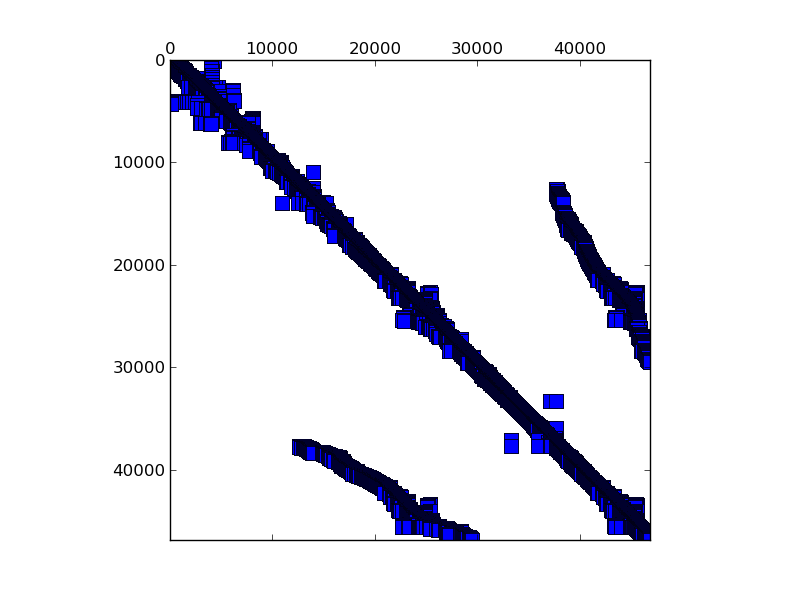

Matrix: rma10

Program arguments: ../build/test_spmv_sim ../fpga16-benchmark/fpga16/rma10.mtx File: ../fpga16-benchmark/fpga16/rma10.mtx Sorting took: took 0.200715 seconds. Param MatrixPath ../fpga16-benchmark/fpga16/rma10.mtx Running on DFE Result Simple Total cycles=280325,291759, Result Simple Padding cycles=7,6, Result Simple Reduction cycles=163919,163926, Config ArchitectureId 4 Result Simple Input width =16, Result Simple Pipes =2, Result Simple Iterations=1, Result Simple Took (ms)=15.0391, Result Simple Est (ms)=0.00280325, Result Simple Gflops (est)=1.69375, Result Simple Gflops (actual)=0.00031571, Result Simple BWidth (est)=35.7628, Test passed! All tests passed!
Name, Order, Nonzeros, Unique Values, Sparsity, MC(2), MC(5), MC(8), MC(10) rma10 46837 2374001 1223223 0.10822 0.01895 0.01912 0.02009 0.02268 0.04590